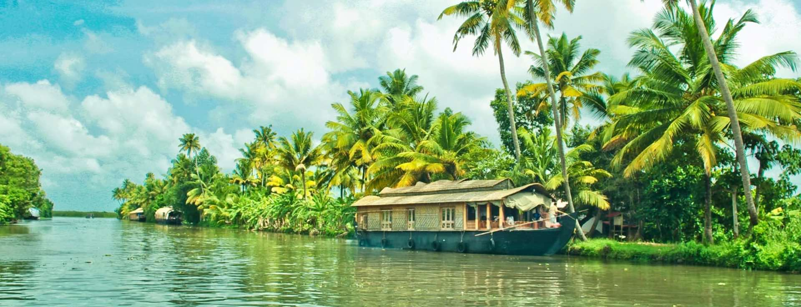

Pradeepika | 2min read | 12-10-2023

Kerala, often referred to as "God's Own Country," is a tropical paradise nestled in the southern part of India. This enchanting state boasts a diverse tapestry of experiences that range from pristine backwaters to lush greenery, exotic wildlife, vibrant culture, and a serene coastline.
Backwater Bliss:
Kerala is synonymous with its serene backwaters, particularly in Alleppey. A houseboat cruise through these tranquil waterways provides a unique glimpse into local life, as you float past swaying coconut palms and quaint villages. The backwaters are an essential part of Kerala's identity, and they offer a truly relaxing and picturesque experience.
Lush Greenery:
Kerala's landscape is adorned with rolling hills, lush tea and spice plantations, and dense forests. The Western Ghats, a UNESCO World Heritage site, is home to numerous wildlife sanctuaries and national parks. Exploring Periyar, Wayanad, or Munnar will bring you close to nature's finest creations, with the opportunity to spot rare flora and fauna.
Rich Culture:
Kerala's cultural heritage is deeply rooted and vibrant. Witness traditional dance forms like Kathakali, martial arts demonstrations, and the famous Theyyam rituals. The state's diverse festivals, including Onam and Thrissur Pooram, are celebrated with fervor and provide an immersive cultural experience.
Ayurvedic Rejuvenation:
Kerala is renowned for its Ayurvedic wellness treatments. Indulge in rejuvenating massages and therapies that have been practiced for centuries. The state offers numerous Ayurvedic retreats and spas for those seeking relaxation and healing.
Coastal Charms:
Kerala's coastline stretches for over 600 kilometers, featuring pristine beaches such as Varkala and Kovalam. Enjoy sunsets, water sports, and fresh seafood by the sea.
Cuisine Extravaganza:
Kerala's cuisine is a delightful exploration of flavors. Savor dishes like appam with stew, Malabar biryani, and the famous Kerala sadya, a sumptuous vegetarian feast served on banana leaves.
In summary, Kerala is a traveler's haven, offering a harmonious blend of nature, culture, and relaxation. It's a destination where you can truly unwind, reconnect with nature, and immerse yourself in a rich and vibrant cultural tapestry. Kerala is a place where every traveler can find their own unique paradise.
Get to know more about Kerala
All rights reserved
TRAVELBLOG 2023